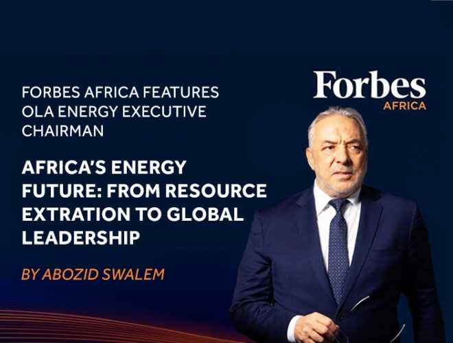

Le Président d’OLA Energy à l’honneur dans Forbes
Africa sur l’avenir
énergétique de l’Afrique
Institutionnel 2026


Le président exécutif d’OLA Energy mis en avant
dans Forbes Africa : «
L’avenir énergétique de
l’Afrique : de l’extraction des ressources au
leadership mondial »
OLA Energy Group est fier d’annoncer la publication d’un article
d’opinion exclusif rédigé
par son président exécutif, M. Abozid
Swalem, dans Forbes Africa, intitulé « L’avenir
énergétique de
l’Afrique : de l’extraction des ressources au leadership mondial. »
Dans cet article, M. Swalem examine l’évolution du paysage
énergétique africain et
l’influence croissante du continent dans la
définition de la transition mondiale vers une
énergie durable.
S’appuyant sur le parcours de transformation d’OLA Energy, il
souligne
l’importance de l’innovation, de l’intégration régionale et
des partenariats stratégiques
comme leviers clés du rôle de
leadership de l’Afrique.
« Notre parcours ne consiste pas seulement à fournir de l’énergie,
il s’agit de transformer le potentiel
de l’Afrique en leadership »,
a déclaré M. Swalem. « Chez OLA Energy, nous pensons que l’avenir du
continent réside dans sa capacité à façonner les récits énergétiques
mondiaux, et pas seulement à y
participer. »
L’article publié dans Forbes Africa renforce la position d’OLA Energy en tant que groupe
énergétique africain tourné vers l’avenir, engagé en faveur du progrès, de la collaboration
et
de la création de valeur à long terme sur l’ensemble de ses marchés.
Lisez l’article complet sur Forbes Africa :
https://www.forbesafrica.com/brand-voice/2025/10/10/africas-energy-future-from-
resource-extraction-to-global-leadership